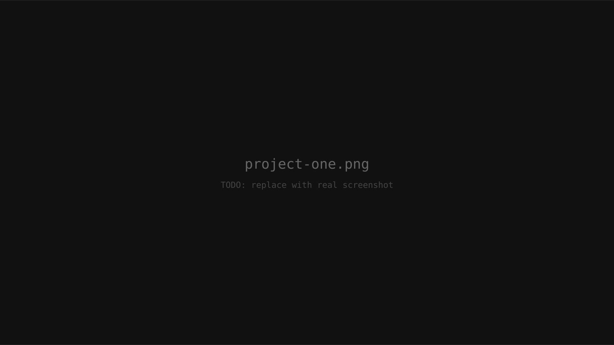

TODO Project One
TODO: one-line description of what it does and why it's interesting.
TODO · TODO · TODO
TODO: One-line tagline — e.g. "Outsystems developer who ships pragmatic business apps."
// about
TODO: First paragraph — who you are and what you do. Keep it conversational but professional.
TODO: Second paragraph — your focus areas, what kinds of problems you like working on, what makes your approach distinct.
TODO: Third paragraph (optional) — anything personal or off-work that adds dimension.
// skills
// experience
TODO Outsystems · TODO · TODO
TODO · TODO
TODO · TODO
TODO · TODO
// projects
// why hire me
// testimonials
"TODO: short quote about working with you."
— TODO Name, TODO Role at TODO Company
"TODO: short quote."
— TODO Name, TODO Role at TODO Company
"TODO: short quote."
— TODO Name, TODO Role at TODO Company
// contact
Open to chat about Outsystems work, side projects, or anything in between.
Download CV (PDF) ↓